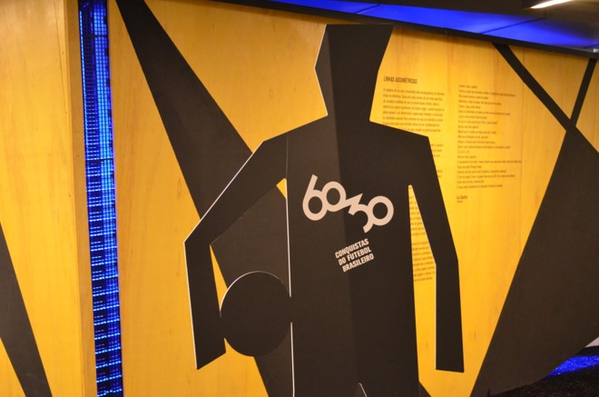
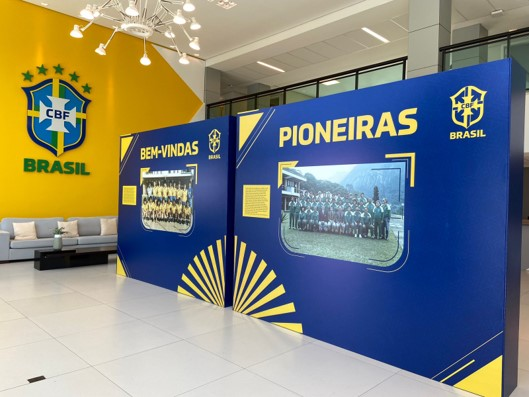
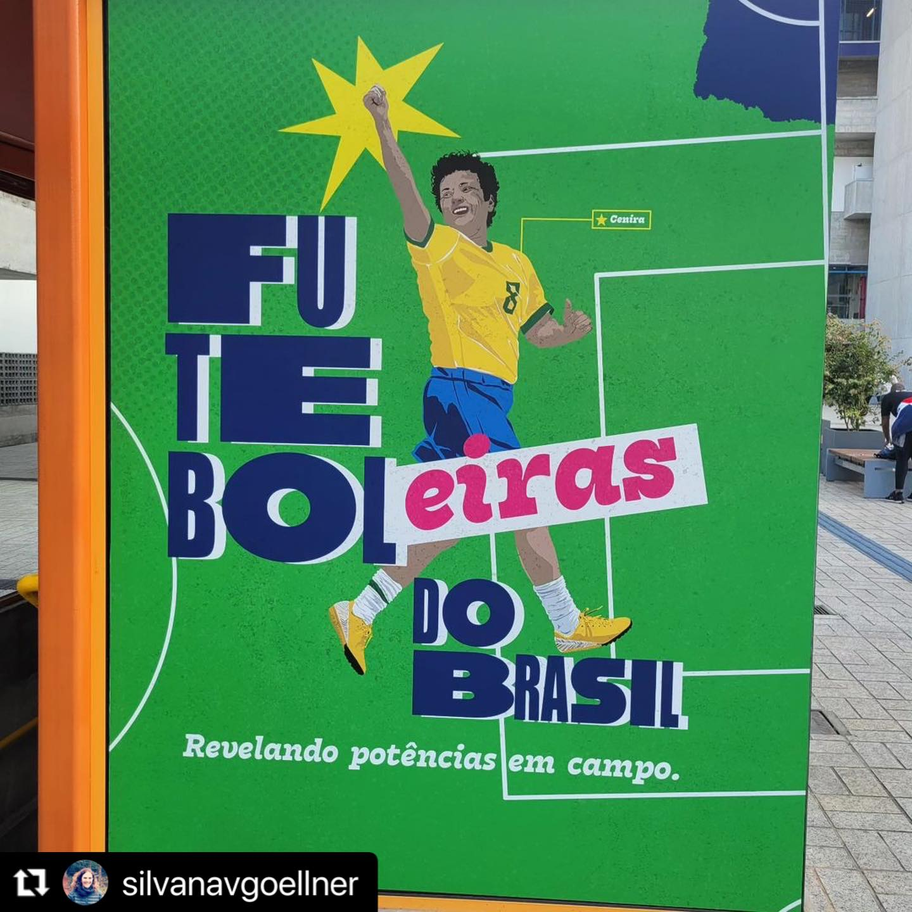
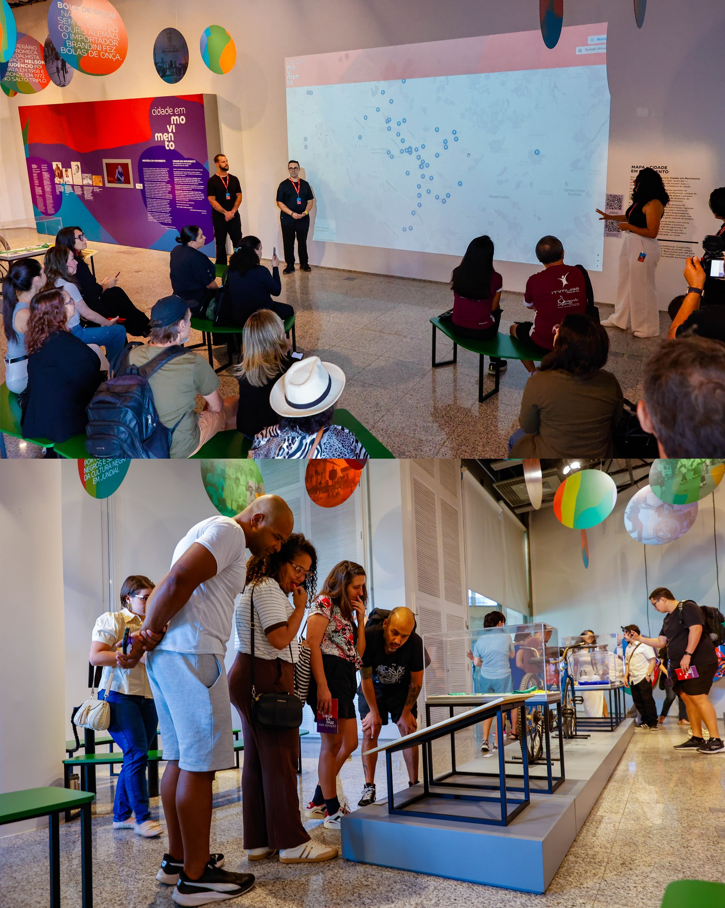
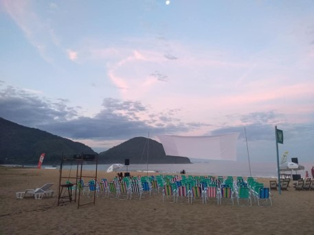
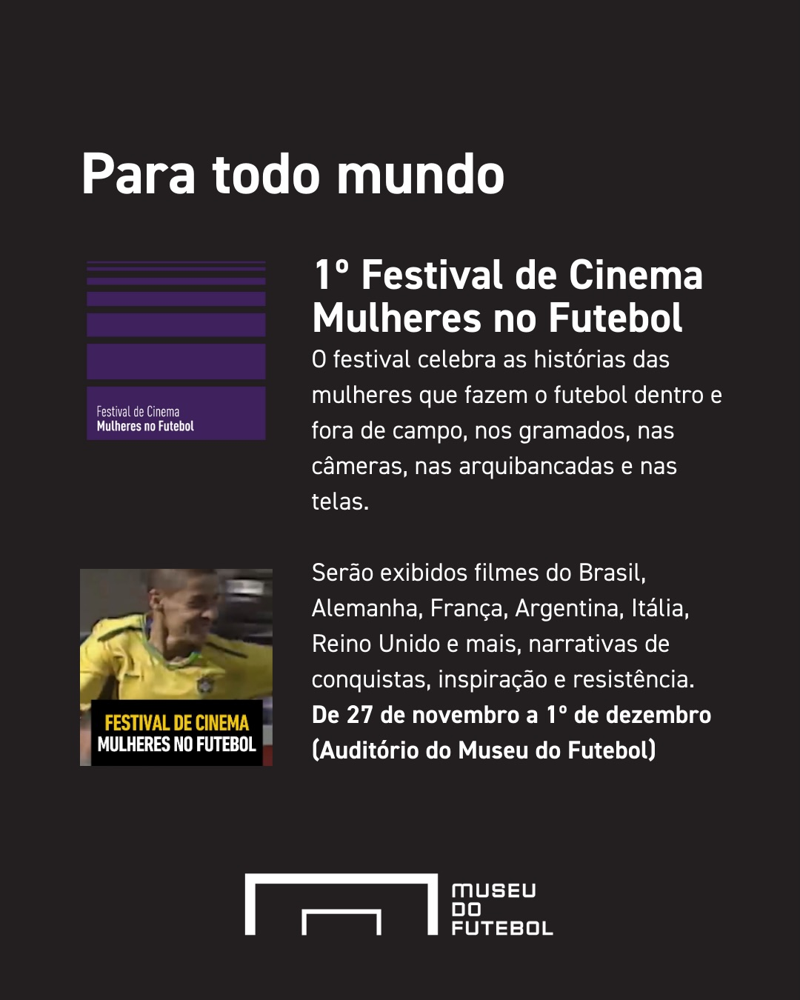
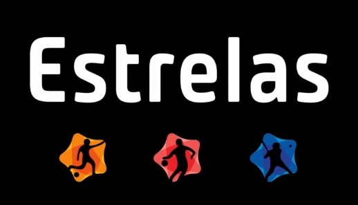

Trabalhos Realizados
Exposições
"O futebol delas – 20 anos de futebol feminino nos Jogos Olímpicos"
Sesc Interlagos – 2016
Pesquisa - Curadoria - Redação de livreto de mediação

"60/30 – Conquistas do Futebol Brasileiro”
Sesc 24 de Maio – 2018
Pesquisa - Curadoria - Produção do conteúdo - Redação de folheto
"Contra-Ataque! As mulheres do futebol"
Museu do Futebol – 2019
Pesquisa - Curadoria

"Homenagem às Pioneiras de 1991"
Granja Comary/CBF - 2021
Pesquisa - Curadoria
"Rainhas de Copas"
Museu do Futebol – 2023
Pesquisa - Curadoria

"Futeboleiras do Brasil - Revelando potências em campo"
Sesc Vila Mariana - 2023
Pesquisa - Curadoria
"Cidade em Movimento"
Sesc Jundiaí - 2025
Pesquisa - Curadoria
Festivais
"De encher os olhos – O esporte do povo na tela do cinema"
Sesc Consolação – 2017
Pesquisa - Curadoria - Mediação

"1º FICSU – Festival Internacional de Cinema de Surf de Ubatuba"
Praia Vermelha do Norte/Ubatuba - 2019
Curadoria
"1º Festival Internacional de Cinema Mulheres no Futebol"
Museu do Futebol - 2025
Produção/Mediação/Mestre de Cerimônia
Audiovisual
"Curta Documentário Institucional - ESTRELAS"
Sesc SP - 2017/2018
Roteiro - Produção


Webnário
Eventos

Festival de Futebol Soçaite Feminino
Sesc Itaquera - 2018
Organização do Festival

Formação Equipe Esportiva Globo/Sportv
Rede Globo - 2023
Palestra de formação para a Copa do Mundo de 2023

Publicações - Autora
"Futebol Feminista"
Editora Livros de Futebol - 2021
Pesquisa - Redação

"Histórias da Copa América Feminina"
Conmebol - 2022
Pesquisa - Supervisão do conteúdo

.png)